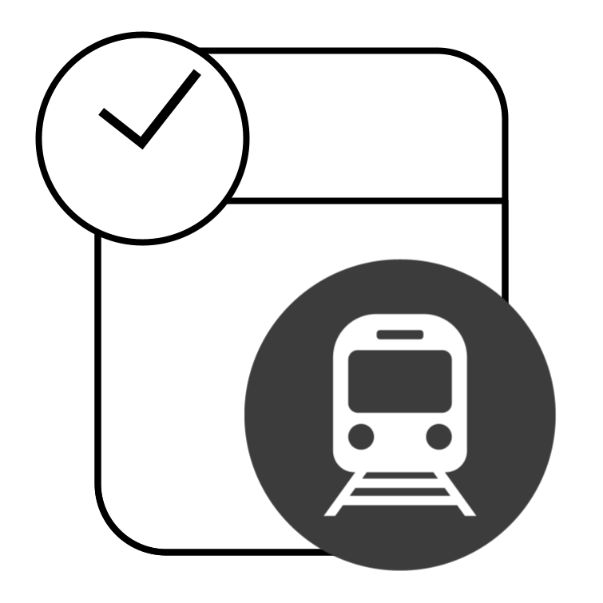
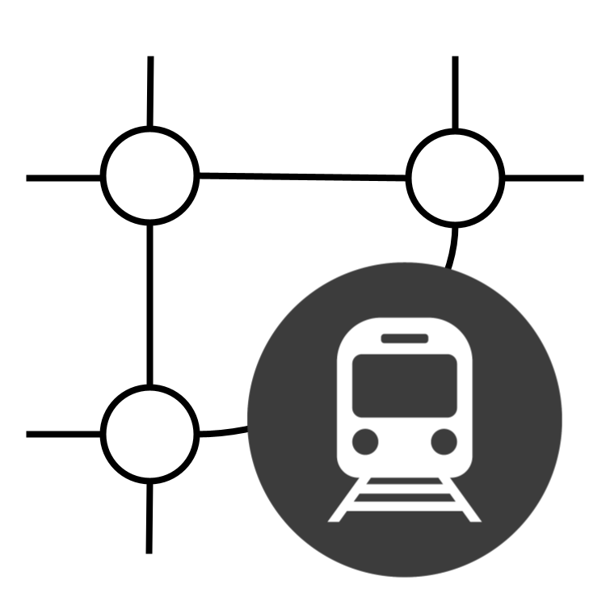
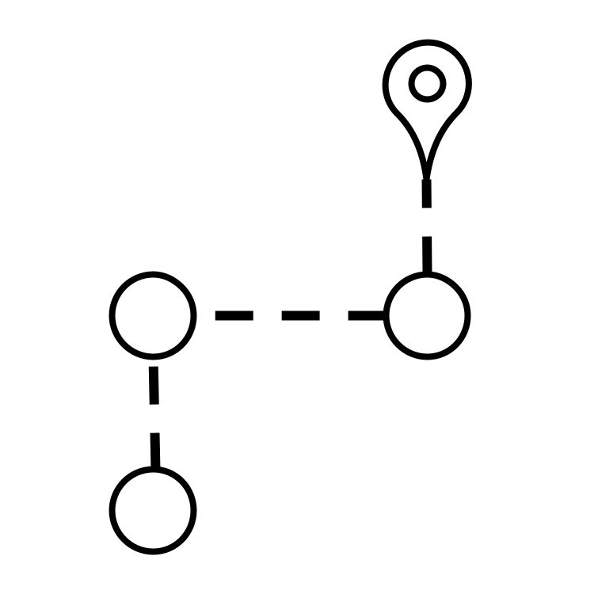
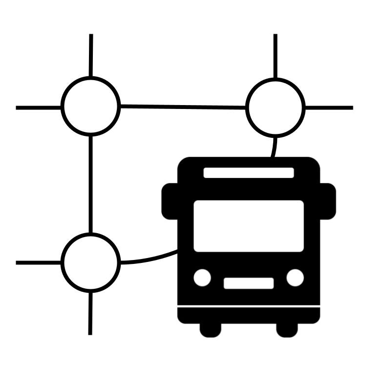

大府市交通局
地下鉄時刻表
地下鉄路線図
乗換案内
バス時刻表
バス路線図
発車案内（マイ駅・停留所）
大府駅
特急
沓掛
10:12
新快速
刈谷
10:20
もっと見る
中央市役所前
南コース
右回り
10:08
南コース
右回り
10:25
もっと見る
共和駅前
普通
緒川
10:15
普通
鞍流瀬川
10:30
もっと見る
マイ駅・停留所を追加
地下鉄 運行情報
現在、平常通り運行しています。
ふれあいバス 運行情報
現在、平常通り運行しています。
地下鉄に乗る
バスに乗る
乗換案内
地下鉄時刻表
地下鉄路線図
バス時刻表
バス路線図